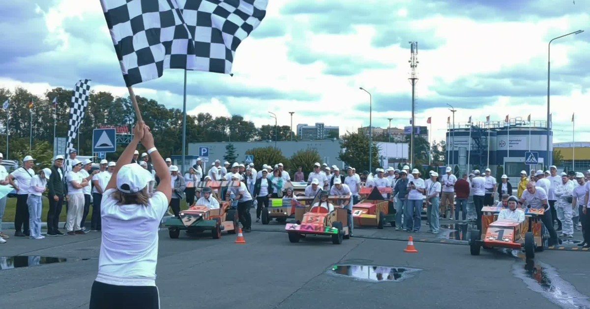

Новичок в первые месяцы решает, остаться в компании или уйти. Решение складывается не из задач, а из людей вокруг: к кому подойти с вопросом, кто поможет, с кем пообедать. Тимбилдинг ускоряет именно эту часть, но только если HR ставит ему задачу заранее, а не заказывает «что-нибудь весёлое».
Я Мария Варламова, руковожу ивент-агентством Каталист. С 2010 года мы провели 4 800 проектов для компаний и получили 16 наград ивент-индустрии. Ниже разбираю, как превратить командный день из развлечения в рабочий инструмент для трёх HR-задач и как потом проверить, что он сработал.
Чаще всего заявка звучит так: «Хотим тимбилдинг на 100 человек, что-нибудь интересное». Такой ивент людям понравится, но HR потом нечего показать руководству: непонятно, что должно было измениться.
Перед выбором формата ответьте на три вопроса:
Разница в формулировке видна сразу. Плохо: «сплотить коллектив». Хорошо: «чтобы 40 человек, пришедших за полгода, знали в лицо коллег из смежных отделов и могли к ним обратиться без посредников». Под вторую задачу ведущий соберёт команды и сценарий иначе, чем под первую.
Новичку трудно не с задачами, а с людьми: спросить неловко, а сам не разберёшься. Тимбилдинг снимает эту неловкость, потому что даёт общее дело, где спрашивать и договариваться нужно по правилам игры.
Работает это при двух условиях. Первое: команды собираем заранее по списку от HR, в каждой новички вперемешку с опытными сотрудниками из разных отделов. Если люди разобьются сами, новички окажутся вместе и поговорят друг с другом. Второе: в задании роли распределены так, что одному не справиться.
Пример механики. Для компании Wilo мы провели «Гонки Формула-1» на 350 сотрудников. Задача была праздничная, но устройство игры то же. Команды собирали собственные болиды, в каждой команде было 10 ролей, люди становились инженерами, конструкторами, дизайнерами, гонщиками и болельщиками. Чтобы болид выдержал техническую проверку жюри и три технических круга, людям пришлось договариваться. Собрали больше 50 болидов, на старт вышли все команды. Подробности и фото в кейсе гонок для Wilo. По итогам дня даже недавно пришедшие сотрудники быстро включились в общую работу и почувствовали себя частью коллектива.
Скажу честно: замера удержания по этому проекту у нас нет. Поэтому ниже отдельный раздел о том, как измерить результат самому. А если вы выстраиваете систему целиком, у нас есть разбор, где этапы адаптации новых сотрудников расписаны от первого дня до конца испытательного срока.
Человек теряет интерес к работе, когда не видит, как его часть влияет на общее. Тимбилдинг может показать эту связь за три часа, если у задания есть общий итог, а не только победитель.
Пример: программа «Корпоративная картина». Больше 80 участников делятся на команды, каждая пишет свою секцию полотна, всего секций 16. Целиком картину до финала не видит никто. Линии должны совпасть на стыках, а цвета по тону, поэтому команды всё время сверяются с соседями. В финале секции соединяют, и получается одна картина.
Для HR здесь важны две вещи. Задание повторяет реальную работу: у каждого свой участок, а результат общий. И картина остаётся в офисе: к ней можно вернуться на планёрке, когда отделы опять не могут договориться.
Один праздник в год людей не удержит. Работает связка событий, которые идут по году:
Связка работает, когда каждое событие продолжает предыдущее. На командном дне участвуют те же смешанные группы, что на welcome-встрече, и знакомство не обнуляется.
На каждом событии добавьте признание. Руководитель называет конкретных людей и конкретные дела, а не благодарит «всех за отличный год». Это пять минут программы, но именно их люди потом пересказывают коллегам.
Внутренним коммуникациям советую с первого дня договориться о фото и видео. Снимки с ивента потом работают месяцами: во внутреннем канале, в материалах для кандидатов, на карьерной странице. Подборку форматов под разные задачи мы собрали на странице про программы командообразования.
Без замера тимбилдинг остаётся «было весело». Минимальный набор для HR:
Главное правило: первый замер делайте до ивента. Если начать после, сравнивать будет не с чем.
Бывают случаи, когда тратить на него бюджет не стоит. Если люди уходят из-за зарплаты, перегрузки или конфликта с руководителем, ивент проблему не решит, а может вызвать раздражение: «лучше бы премию дали». Сначала решите причину, потом собирайте команду.
И ещё: не ставьте командный день на выходные без согласия людей. Ивент в личное время многие воспримут как обязанность, и пользы для вовлечённости не будет.
Хитрость на десерт: позовите в подготовку двух-трёх сотрудников из разных отделов. Пусть помогут собрать команды и придумать название. В день ивента они сами позовут коллег, и звать людей рассылками HR почти не придётся.